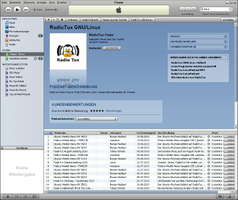
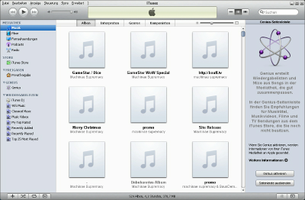
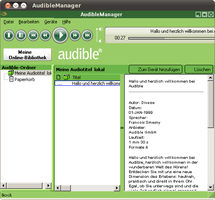

iTunes
Archivierte Anleitung
Dieser Artikel wurde archiviert, da er - oder Teile daraus - nur noch unter einer älteren Ubuntu-Version nutzbar ist. Diese Anleitung wird vom Wiki-Team weder auf Richtigkeit überprüft noch anderweitig gepflegt. Zusätzlich wurde der Artikel für weitere Änderungen gesperrt.
Zum Verständnis dieses Artikels sind folgende Seiten hilfreich:
iTunes  ist ein proprietäres Musikverwaltungsprogramm, das eine Vielzahl von Funktionen bietet. Das Abspielen, Organisieren und Kaufen von Multimediainhalten sind einige der Merkmale. Die unterstützten Formate sind unter anderem AAC, AIFF, Apple Lossless, MIDI und MP3. Das Programm ist lediglich für Mac OS X und Windows verfügbar.
ist ein proprietäres Musikverwaltungsprogramm, das eine Vielzahl von Funktionen bietet. Das Abspielen, Organisieren und Kaufen von Multimediainhalten sind einige der Merkmale. Die unterstützten Formate sind unter anderem AAC, AIFF, Apple Lossless, MIDI und MP3. Das Programm ist lediglich für Mac OS X und Windows verfügbar.
|  |  |
| iTunes 7.2 | iTunes 9.2.1 |
Zur Synchronisierung mit einem iPod können unter Linux eine Vielzahl von Programmen verwendet werden. Dies funktioniert jedoch nicht mit dem proprietären Format von Audible (MP3 im AAC-DRM-Container), s.u.
Installation¶
Zuerst lädt man sich die gewünschte 32-Bit-Version herunter und installiert diese mit Wine [1] [2], AutoRun deaktiviert lassen. Nach der Installation ist das Programm unter "Anwendungen -> Wine -> Programme -> iTunes -> iTunes" zu finden. Damit es problemlos funktioniert, muss noch die Konfiguration angepasst werden. Bei der Verwendung von Audible™ muss man anschließend die entsprechende Zusatzsoftware installieren.
Konfiguration¶
Nachdem das Programm installiert wurde, muss Wine noch konfiguriert werden. Über "Anwendungen -> Wine -> Konfiguriere Wine" gelangt man zum Konfigurationsmenü und fügt im Reiter "Anwendungen" iTunes hinzu. Als Windowsversion zur Ausführung des Programms "Windows XP" wählen. Anschließend im Reiter "Audio" den "ALSA-Treiber" auswählen.
Sprache¶
Über "Edit -> Preferences -> General" kann die gewünschte Sprache für iTunes unter "Language" eingestellt werden. Die Auswahl mit "OK" bestätigen, nach einem Neustart des Programms wird diese verwendet.
|  | |
| Audible™ Download Manager 6.6.0.12 | Audible™ Manager 5.5.0.4 |
Audible¶
Audible Manager¶
Achtung!
Audible ist für Linux (und damit Ubuntu)-Systeme erstmal nicht geeignet. Grund ist zum einen das proprietäre aax-Format (mp3 mit DRM-Kopierschutz). Zum anderen wird der Downloader von audible nur für Windows- und Mac-OSX-Systeme angeboten. Eine Erstanwendung mit Ubuntu ist nicht möglich.
Wurden 1x mit einem Windows-System Hörbücher und Downloader und iTunes erfolgreich heruntergeladen, ist ein Download auch über Ubuntu (im getesteten Fall mit Firefox) möglich.
Es wird empfohlen, für den Download von Hörbüchern Anbieter zu wählen, bei denen direkt mp3-Dateien zum Download angeboten werden. Bei Audible ist dies leider nicht der Fall.
Als Alternative zu iTunes kann der Audible Manager  verwendet werden um Hörbücher zu hören. Nach dem einspielen [1] [2] der Software wird diese konfiguriert und der Audible Download Manager eingespielt. Anschließend den Account aktivieren und die Hörbücher herunterladen bzw. importieren.
verwendet werden um Hörbücher zu hören. Nach dem einspielen [1] [2] der Software wird diese konfiguriert und der Audible Download Manager eingespielt. Anschließend den Account aktivieren und die Hörbücher herunterladen bzw. importieren.
Audible Download Manager¶
Um in den Genuss eines Hörbuchs von Audible zu kommen, lädt man den Audible Download Manager herunter und installiert [1] [2] diesen.
Audible - Konfiguration¶
Nachdem der Installation des Audible Download Manager's, muss Wine konfiguriert werden. Über "Anwendungen -> Wine -> Konfiguriere Wine -> Anwendungen" diesen hinzufügen und "Windows XP" auswählen.
Import¶
Nach dem Hinzufügen eines Titels werden Benutzername und Kennwort des Audible-Zugangs benötigt. Diese Daten im Manager unter "Audible-Podcasts" eingeben. Unter "Einstellungen -> Download-Ordner ändern" den Ordner zu den Hörbüchern angeben und diesen anschließend über "Datei -> Suche nach Audible-Titeln..." importieren.
Hörbücher¶
Um Hörbücher herunterzuladen, muss der Audible Download Manager im Vorfeld gestartet werden. In der Bibliothek von Audible den gewünschten Titel durch Anwählen von "Download" herunterladen und in der anschließenden Abfrage, mit welchem Programm die Datei aw_dhelper.pl geöffnet werden soll, den Pfad zum Manager im Homeverzeichnis angeben (z.B. /home/BENUTZERNAME/.wine/drive_c/Programme/Audible/Bin/AudibleDownloadHelper.exe). Das Herunterladen des Titels wird anschließend gestartet und dieser anschließend importiert.


- Erstellt mit Inyoka
-
 2004 – 2017 ubuntuusers.de • Einige Rechte vorbehalten
2004 – 2017 ubuntuusers.de • Einige Rechte vorbehalten
Lizenz • Kontakt • Datenschutz • Impressum • Serverstatus -
Serverhousing gespendet von